Q01 · 55.2 / Primary Production in Terrestrial Ecosystems 正式分類
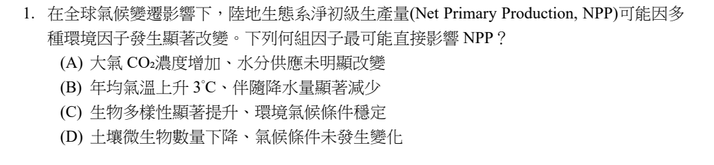
原卷PDF2 · 官方原答案PDF4 · 釋疑PDF7、釋疑PDF8
官方採計：B 原答案：B
維持原答案B
主分類：Ch55 Ecosystems and Restoration Ecology
55.2 / Primary Production in Terrestrial Ecosystems
目錄行3692；條目起始印刷頁1243；實際目錄 PDF50
主分類理由：題目比較陸域生態系NPP對環境的反應，最小條目為陸域初級生產量。
次分類理由：無；能量收支是同一判別的背景，不另加寬泛章節。
科學說明：官方B。教材支持溫度與降水共同影響陸域NPP；CO₂也可直接影響光合作用，不能把本題相對選項推成所有情境固定的限制因子排名。
來源涵蓋範圍：Campbell正文支援分類原理；原題與官方釋疑的假設、資料及措辭限制另見科學說明。
教材正文：印刷1241／PDF1290、印刷1242／PDF1291、印刷1243／PDF1292、印刷1244／PDF1293
補充來源：不需另加課本外具名機制來源
另行比較：一般能量預算還是陸域NPP環境限制？
1243–1244頁直接討論溫度降水，主條目應縮到陸域初級生產；CO₂干擾選項的情境限制另留，無未決分類。
結論：證據確認，分類疑義已解決。完整覆核紀錄
Q02 · 23.4 / Natural Selection: A Closer Look 正式分類
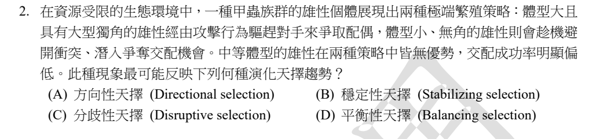
原卷PDF2 · 官方原答案PDF4 · 已核對生物釋疑PDF7–15
官方採計：C 原答案：C
未列於已取得114生物釋疑PDF7–15；依同年度原答案PDF4採計
主分類：Ch23 The Evolution of Populations
23.4 / Natural Selection: A Closer Look
目錄行1465；條目起始印刷頁497；實際目錄 PDF41
次分類：Ch23 The Evolution of Populations
23.4 / Sexual Selection
目錄行1471；條目起始印刷頁499；實際目錄 PDF41
主分類理由：兩端體型受偏好而中間型不利，屬分裂式選擇，位於自然選擇的細看條目。
次分類理由：配偶選擇是造成適存度差異的機制，因此保留性擇同章最小次條目。
科學說明：官方C。穩定式選擇有利中間型，方向式有利單一端；兩端共同有利才符合題文。
來源涵蓋範圍：Campbell正文支援分類原理；原題與官方釋疑的假設、資料及措辭限制另見科學說明。
教材正文：印刷497／PDF546、印刷498／PDF547、印刷499／PDF548
補充來源：不需另加課本外具名機制來源
另行比較：性擇是否應取代分裂選擇作主分類？
題目要求選擇模式，497–498頁兩端有利圖符合；499頁性擇為造成模式的機制，主次層級確認。
結論：證據確認，分類疑義已解決。完整覆核紀錄
Q03 · 53.4 / “Trade-offs” and Life Histories 正式分類
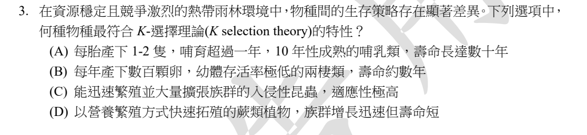
原卷PDF2 · 官方原答案PDF4 · 已核對生物釋疑PDF7–15
官方採計：A 原答案：A
未列於已取得114生物釋疑PDF7–15；依同年度原答案PDF4採計
主分類：Ch53 Population Ecology
53.4 / “Trade-offs” and Life Histories
目錄行3564；條目起始印刷頁1201；實際目錄 PDF49
次分類：Ch53 Population Ecology
53.4 / Diversity of Life Histories
目錄行3561；條目起始印刷頁1200；實際目錄 PDF49
主分類理由：少數後代、較晚生殖及較多親代投資，重點是生活史資源權衡及K選擇。
次分類理由：生活史多樣性提供生殖時間、次數與後代數的比較框架。
科學說明：官方A。採題目的K選擇理想型；教材提醒生活史特徵不一定總是成套對應r/K二分，不把所有靈長類絕對化。
來源涵蓋範圍：Campbell正文支援分類原理；原題與官方釋疑的假設、資料及措辭限制另見科學說明。
教材正文：印刷1200／PDF1249、印刷1201／PDF1250、印刷1202／PDF1251
補充來源：不需另加課本外具名機制來源
另行比較：族群成長曲線還是生活史權衡？
後代數、成熟時間與照顧投入是生活史策略，1201–1202頁直接涵蓋K選擇；未要求解成長模型，不改歸族群增長。
結論：證據確認，分類疑義已解決。完整覆核紀錄
Q04 · 55.4 / Decomposition and Nutrient Cycling Rates 正式分類
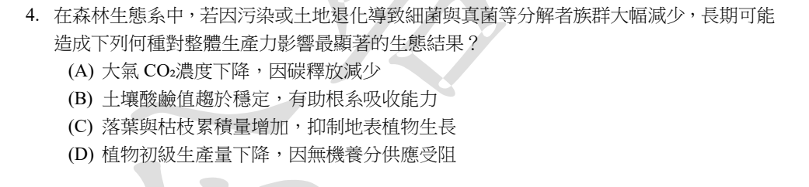
官方採計：D 原答案：D
維持原答案D
主分類：Ch55 Ecosystems and Restoration Ecology
55.4 / Decomposition and Nutrient Cycling Rates
目錄行3709；條目起始印刷頁1248；實際目錄 PDF50
次分類：Ch55 Ecosystems and Restoration Ecology
55.2 / Primary Production in Terrestrial Ecosystems
目錄行3692；條目起始印刷頁1243；實際目錄 PDF50
主分類理由：分解者減少先影響養分回收及循環速率，是因果鏈的直接機制。
次分類理由：養分供應限制陸域初級生產，連接到題目詢問的NPP結果。
科學說明：官方D並維持。能量流動與物質循環不同，分解作用不把能量重新送回生產者；回收養分才是教材支持的連結。釋疑頁碼不沿用為本地12e頁碼。
來源涵蓋範圍：Campbell正文支援分類原理；原題與官方釋疑的假設、資料及措辭限制另見科學說明。
教材正文：印刷1243／PDF1292、印刷1248／PDF1297、印刷1249／PDF1298
補充來源：不需另加課本外具名機制來源
另行比較：只歸初級生產是否漏掉分解因果？
1248頁直接連結分解速率與养分回流，故主分解、次NPP；官方D與教材機制一致。
結論：證據確認，分類疑義已解決。完整覆核紀錄
Q05 · 54.2 / Diversity and Community Stability 正式分類
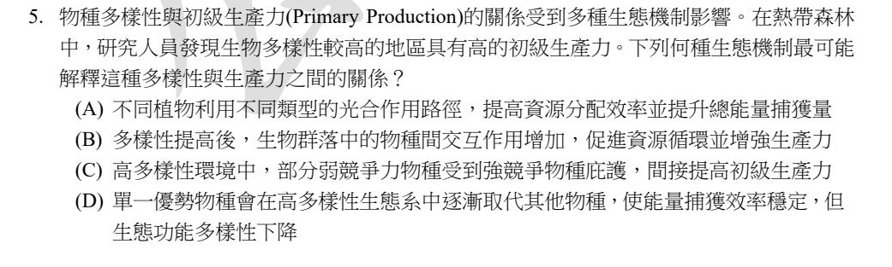
原卷PDF2 · 官方原答案PDF4 · 釋疑PDF8、釋疑PDF9
官方採計：B 原答案：B
維持原答案B
主分類：Ch54 Community Ecology
54.2 / Diversity and Community Stability
目錄行3614；條目起始印刷頁1223；實際目錄 PDF50
次分類：Ch54 Community Ecology
54.1 / Positive Interactions
目錄行3604；條目起始印刷頁1220；實際目錄 PDF50
主分類理由：物種多樣性與群落生產力、穩定性的實驗比較直接位於此條目。
次分類理由：正向交互作用可解釋物種互助與促進效應；保留跨概念而同章的機制。
科學說明：官方B並維持。教材有較多樣群落可較高生產力的實驗依據；效果依物種組成及條件，不聲稱任何新增物種必然增加產量。
來源涵蓋範圍：Campbell正文支援分類原理；原題與官方釋疑的假設、資料及措辭限制另見科學說明。
教材正文：印刷1220／PDF1269、印刷1221／PDF1270、印刷1223／PDF1272
補充來源：不需另加課本外具名機制來源
另行比較：互利共生還是群落多樣性與穩定？
1223頁直接有多樣性生產力實驗；1220頁正向作用僅提供機制，不以單一物種關係取代群落主題。
結論：證據確認，分類疑義已解決。完整覆核紀錄
Q06 · 22.3 / Homology 正式分類
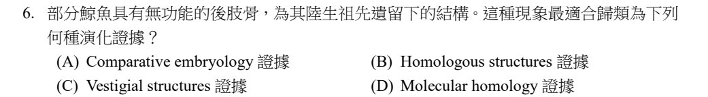
原卷PDF2 · 官方原答案PDF4 · 已核對生物釋疑PDF7–15
官方採計：C 原答案：C
未列於已取得114生物釋疑PDF7–15；依同年度原答案PDF4採計
主分類：Ch22 Descent with Modification: A Darwinian View of Life
22.3 / Homology
目錄行1412；條目起始印刷頁479；實際目錄 PDF41、PDF42
主分類理由：鯨類退化後肢是由共同祖先繼承之同源構造證據，歸22.3 Homology。
次分類理由：無；退化構造在正文中，並不是本地目錄另有的最小節點。
科學說明：官方C。殘存構造可失去祖先主要功能但仍有其他用途；不把退化等同完全無功能，也不另造Vestigial Structures目錄。
來源涵蓋範圍：Campbell正文支援分類原理；原題與官方釋疑的假設、資料及措辭限制另見科學說明。
教材正文：印刷479／PDF528、印刷480／PDF529
補充來源：不需另加課本外具名機制來源
另行比較：退化構造能否當独立目錄節點？
479–480頁置於Homology而本地目錄無更小退化構造條目；採真實最小項，不沿用自造標題。
結論：證據確認，分類疑義已解決。完整覆核紀錄
Q07 · 23.3 / Natural Selection 正式分類
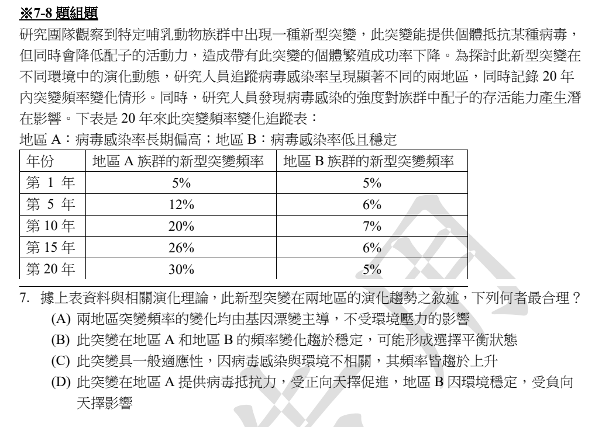
原卷PDF3 · 官方原答案PDF4 · 釋疑PDF9、釋疑PDF10
官方採計：D 原答案：D
維持原答案D
主分類：Ch23 The Evolution of Populations
23.3 / Natural Selection
目錄行1452；條目起始印刷頁494；實際目錄 PDF35、PDF41、PDF49
次分類：Ch23 The Evolution of Populations
23.4 / Natural Selection: A Closer Look
目錄行1465；條目起始印刷頁497；實際目錄 PDF41
主分類理由：比較兩地等位基因頻率變化與題設選擇壓力，主軸為自然選擇改變頻率。
次分類理由：适存度差異及選擇方向的解讀由23.4的最小條目補足。
科學說明：官方D並維持。A區頻率增加可符合有利選擇；B區5→6→7→6→5的短期資料本身不能證明負向選擇，也未排除漂變。採計D與資料可推論範圍分開。
來源涵蓋範圍：Campbell正文支援分類原理；原題與官方釋疑的假設、資料及措辭限制另見科學說明。
教材正文：印刷494／PDF543、印刷497／PDF546、印刷498／PDF547
補充來源：不需另加課本外具名機制來源
另行比較：B區頻率起伏可否排除漂變？
原表終點回到起點，不能唯一確認負選擇。主題仍是題設自然選擇效應；答案D的推論限制和備選漂變已記錄，並非未解的目錄歸屬。
結論：證據確認，分類疑義已解決。完整覆核紀錄
Q08 · 23.4 / Balancing Selection 正式分類
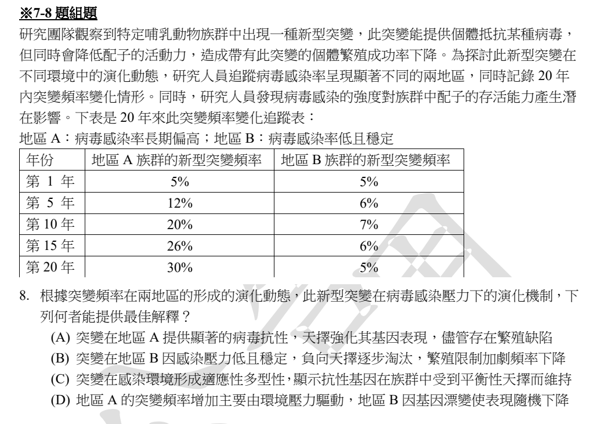
官方採計：C 原答案：C
維持原答案C
主分類：Ch23 The Evolution of Populations
23.4 / Balancing Selection
目錄行1474；條目起始印刷頁500；實際目錄 PDF41
次分類：Ch23 The Evolution of Populations
23.3 / Natural Selection
目錄行1452；條目起始印刷頁494；實際目錄 PDF35、PDF41、PDF49
主分類理由：題問如何維持兩型並存，直接對照平衡式選擇條目。
次分類理由：地域環境差異造成選擇壓力差異，是平衡維持的候選背景機制。
科學說明：官方C並維持。同時存在不等於已證明穩定平衡；題表沒有雜合子適存度或頻率依賴證據，不能擅自斷言雜合子優勢。共用Q7–8表格完整保留。
來源涵蓋範圍：Campbell正文支援分類原理；原題與官方釋疑的假設、資料及措辭限制另見科學說明。
教材正文：印刷494／PDF543、印刷500／PDF549、印刷501／PDF550
補充來源：不需另加課本外具名機制來源
另行比較：是否有證據特指雜合子優勢？
500–501頁平衡選擇涵蓋多機制；題表無基因型適存度，故停在真實最小Balancing Selection，不添加未證實的子機制。
結論：證據確認，分類疑義已解決。完整覆核紀錄
Q09 · 56.3 / Landscape Structure and Biodiversity 正式分類
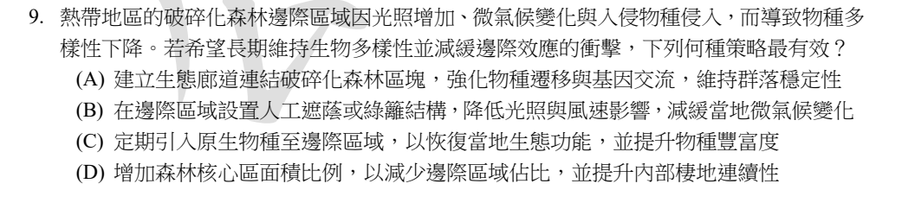
原卷PDF3 · 官方原答案PDF4 · 釋疑PDF10、釋疑PDF11
官方採計：A 原答案：A
維持原答案A
主分類：Ch56 Conservation Biology and Global Change
56.3 / Landscape Structure and Biodiversity
目錄行3768；條目起始印刷頁1270；實際目錄 PDF50
次分類：Ch56 Conservation Biology and Global Change
56.3 / Establishing Protected Areas
目錄行3771；條目起始印刷頁1272；實際目錄 PDF50
主分類理由：破碎棲地、邊緣與廊道的直接目錄條目是景觀結構與生物多樣性。
次分類理由：保護區設計討論核心面積、邊緣及連通性的取捨。
科學說明：官方A並維持。釋疑額外假定已無法擴大核心區，但題幹未明說；教材也支持較大核心及提醒廊道可傳播疾病，不能將D擴大核心說成一般無效。
來源涵蓋範圍：Campbell正文支援分類原理；原題與官方釋疑的假設、資料及措辭限制另見科學說明。
教材正文：印刷1270／PDF1319、印刷1271／PDF1320、印刷1272／PDF1321
補充來源：不需另加課本外具名機制來源
另行比較：保護區面積與廊道如何取主次？
1270–1272頁景觀結構直接涵蓋破碎與廊道，保護區設計為次。釋疑新增不可擴核心假設與原題差異已明示。
結論：證據確認，分類疑義已解決。完整覆核紀錄
Q10 · 29.2 / Bryophyte Gametophytes 正式分類
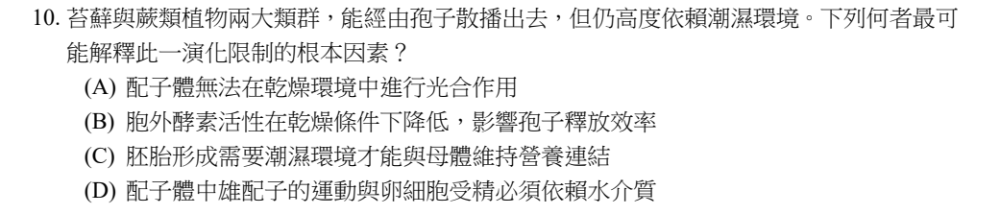
原卷PDF3 · 官方原答案PDF4 · 已核對生物釋疑PDF7–15
官方採計：D 原答案：D
未列於已取得114生物釋疑PDF7–15；依同年度原答案PDF4採計
主分類：Ch29 Plant Diversity I: How Plants Colonized Land
29.2 / Bryophyte Gametophytes
目錄行1877；條目起始印刷頁624；實際目錄 PDF43
次分類：Ch29 Plant Diversity I: How Plants Colonized Land
29.3 / Origins and Traits of Vascular Plants
目錄行1890；條目起始印刷頁629；實際目錄 PDF43
主分類理由：苔蘚配子體的游動精子需水完成受精，直接回答水的生殖角色。
次分類理由：蕨類所屬維管束植物起源與特徵及生活史圖同樣顯示精子需水。
科學說明：官方D。兩者差異在優勢世代和維管束；共享的依水受精不能誤成種子植物式花粉傳遞。
來源涵蓋範圍：Campbell正文支援分類原理；原題與官方釋疑的假設、資料及措辭限制另見科學說明。
教材正文：印刷624／PDF673、印刷625／PDF674、印刷629／PDF678、印刷630／PDF679
補充來源：不需另加課本外具名機制來源
另行比較：需要兩個植物條目還是只列生殖總論？
624–625及630頁分別核對苔蘚與蕨生活史，兩個最小條目均保留，避免僅凭共享「需水」漏掉比較類群。
結論：證據確認，分類疑義已解決。完整覆核紀錄
Q11 · 22.2 / Ideas from The Origin of Species 正式分類
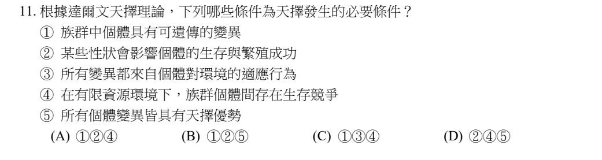
原卷PDF4 · 官方原答案PDF4 · 已核對生物釋疑PDF7–15
官方採計：A 原答案：A
未列於已取得114生物釋疑PDF7–15；依同年度原答案PDF4採計
主分類：Ch22 Descent with Modification: A Darwinian View of Life
22.2 / Ideas from The Origin of Species
目錄行1399；條目起始印刷頁473；實際目錄 PDF41
次分類：Ch22 Descent with Modification: A Darwinian View of Life
22.2 / Key Features of Natural Selection
目錄行1402；條目起始印刷頁476；實際目錄 PDF41
主分類理由：辨別達爾文的觀察與推論，直接對照物種起源思想條目。
次分類理由：自然選擇的重要特徵排除目的性變異與個體主動演化。
科學說明：官方A，即1、2、4。族群有可遺傳變異與過度繁殖，差異繁殖使性狀比例改變；不是因需要而產生定向變異。
來源涵蓋範圍：Campbell正文支援分類原理；原題與官方釋疑的假設、資料及措辭限制另見科學說明。
教材正文：印刷474／PDF523、印刷475／PDF524、印刷476／PDF525
補充來源：不需另加課本外具名機制來源
另行比較：達爾文推論是否屬一般研究方法？
474–476頁逐項支持可遺傳變異和差異繁殖；不是实验設計題，主22.2的物種起源思想。
結論：證據確認，分類疑義已解決。完整覆核紀錄
Q12 · 18.2 / Regulation of Chromatin Structure 正式分類
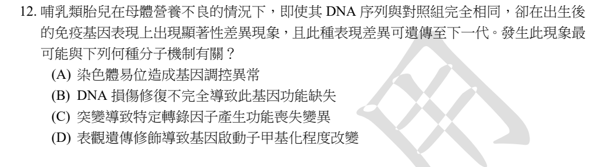
原卷PDF4 · 官方原答案PDF4 · 釋疑PDF11、釋疑PDF12
官方採計：D 原答案：D
維持原答案D
主分類：Ch18 Regulation of Gene Expression
18.2 / Regulation of Chromatin Structure
目錄行1123；條目起始印刷頁371；實際目錄 PDF39
主分類理由：同DNA序列而啟動子甲基化與表現不同，屬染色質結構調節。
次分類理由：無；免疫基因僅為例子，沒有另考免疫反應機制。
科學說明：官方D並維持。DNA甲基化可維持細胞世代的表現差異；個體跨代傳遞另受生殖系重設影響，不能把細胞層次保留直接當成所有哺乳類跨代現象均成立。
來源涵蓋範圍：Campbell正文支援分類原理；原題與官方釋疑的假設、資料及措辭限制另見科學說明。
教材正文：印刷371／PDF420、印刷372／PDF421、印刷373／PDF422
補充來源：不需另加課本外具名機制來源
另行比較：免疫分類與染色質調節競爭？
題幹免疫只是被調控的基因例子；371–373頁甲基化及表觀遺傳直接支持18.2。細胞世代與個體跨代界線保留。
結論：證據確認，分類疑義已解決。完整覆核紀錄
Q13 · 23.3 / Gene Flow 正式分類
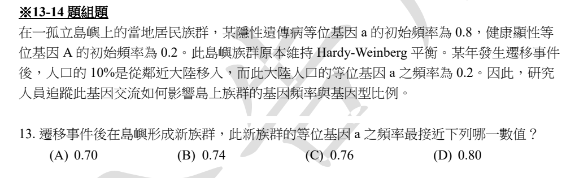
原卷PDF4 · 官方原答案PDF4 · 已核對生物釋疑PDF7–15
官方採計：B 原答案：B
未列於已取得114生物釋疑PDF7–15；依同年度原答案PDF4採計
主分類：Ch23 The Evolution of Populations
23.3 / Gene Flow
目錄行1458；條目起始印刷頁496；實際目錄 PDF41
次分類：Ch23 The Evolution of Populations
23.2 / Gene Pools and Allele Frequencies
目錄行1442；條目起始印刷頁490；實際目錄 PDF41
主分類理由：遷入者造成等位基因頻率改變，是基因流的直接機制。
次分類理由：基因庫與等位基因頻率提供按遷移比例加權的計算定義。
科學說明：官方B。新頻率=0.9×0.8+0.1×0.2=0.74；不可直接平均兩來源。完整保留Q13–14遷移題組。
來源涵蓋範圍：Campbell正文支援分類原理；原題與官方釋疑的假設、資料及措辭限制另見科學說明。
教材正文：印刷490／PDF539、印刷496／PDF545
補充來源：不需另加課本外具名機制來源
另行比較：遺傳漂變還是移民造成頻率改變？
題文明确給迁移比例，不需隨機抽樣模型；496頁Gene Flow加490頁頻率定義完成0.74計算。
結論：證據確認，分類疑義已解決。完整覆核紀錄
Q14 · 23.2 / The Hardy-Weinberg Equation 正式分類
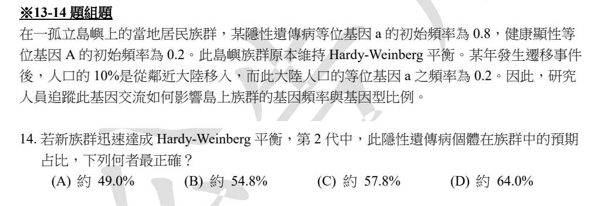
原卷PDF4 · 官方原答案PDF4 · 已核對生物釋疑PDF7–15
官方採計：B 原答案：B
未列於已取得114生物釋疑PDF7–15；依同年度原答案PDF4採計
主分類：Ch23 The Evolution of Populations
23.2 / The Hardy-Weinberg Equation
目錄行1445；條目起始印刷頁490；實際目錄 PDF41
次分類：Ch23 The Evolution of Populations
23.3 / Gene Flow
目錄行1458；條目起始印刷頁496；實際目錄 PDF41
主分類理由：題問隨機交配後基因型比例，主分類為Hardy–Weinberg方程。
次分類理由：所用頻率來自題組遷移事件，故基因流保留為次條目。
科學說明：官方B。以題組所得0.74計算相應同型合子0.74²=0.5476；須在題定平衡/隨機交配條件下使用平方，不把等位頻率直接當個體比例。
來源涵蓋範圍：Campbell正文支援分類原理；原題與官方釋疑的假設、資料及措辭限制另見科學說明。
教材正文：印刷490／PDF539、印刷491／PDF540、印刷492／PDF541、印刷493／PDF542、印刷496／PDF545
補充來源：不需另加課本外具名機制來源
另行比較：遷移計算應否仍為主分類？
本題輸出為同型合子比例，必用HW平方而不是只算混合；主方程次基因流，0.5476核算一致。
結論：證據確認，分類疑義已解決。完整覆核紀錄
Q15 · 7.3 / Facilitated Diffusion: Passive Transport Aided by Proteins 正式分類
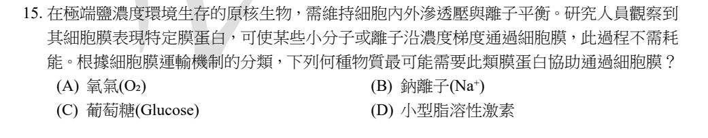
原卷PDF4 · 官方原答案PDF4 · 已核對生物釋疑PDF7–15
官方採計：B 原答案：B
未列於已取得114生物釋疑PDF7–15；依同年度原答案PDF4採計
主分類：Ch07 Membrane Structure and Function
7.3 / Facilitated Diffusion: Passive Transport Aided by Proteins
目錄行443；條目起始印刷頁135；實際目錄 PDF36
次分類：Ch07 Membrane Structure and Function
7.2 / The Permeability of the Lipid Bilayer
目錄行430；條目起始印刷頁132；實際目錄 PDF36
主分類理由：離子藉膜蛋白順梯度移動是促進性擴散的直接判別。
次分類理由：脂雙層通透性說明Na⁺不能自由穿越疏水核心。
科學說明：官方B。Na⁺須離子通道或載體；但C葡萄糖也可經載體促進性擴散（教材132、135–136頁），故題文不足以排除所有葡萄糖情境，不能宣稱只有鈉需要膜蛋白。
來源涵蓋範圍：Campbell正文支援分類原理；原題與官方釋疑的假設、資料及措辭限制另見科學說明。
教材正文：印刷132／PDF181、印刷135／PDF184、印刷136／PDF185
補充來源：不需另加課本外具名機制來源
另行比較：官方B是否能科學上完全排除葡萄糖？
132及135–136頁載有葡萄糖載體，不能全面排除C。分類可確定為促進性擴散，單選的限定不足另存不抹除。
結論：證據確認，分類疑義已解決。完整覆核紀錄
Q16 · 35.1 / Common Types of Plant Cells 正式分類
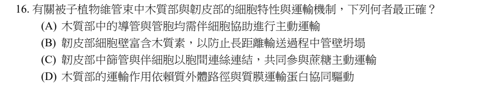
原卷PDF4 · 官方原答案PDF4 · 已核對生物釋疑PDF7–15
官方採計：C 原答案：C
未列於已取得114生物釋疑PDF7–15；依同年度原答案PDF4採計
主分類：Ch35 Vascular Plant Structure, Growth, and Development
35.1 / Common Types of Plant Cells
目錄行2289；條目起始印刷頁763；實際目錄 PDF44
次分類：Ch36 Resource Acquisition and Transport in Vascular Plants
36.5 / Movement from Sugar Sources to Sugar Sinks
目錄行2410；條目起始印刷頁799；實際目錄 PDF45
主分類理由：篩管分子與伴細胞的構造、代謝分工及胞間連絲屬植物常見細胞類型。
次分類理由：源到庫的糖移動條目說明伴細胞相關蔗糖裝載。
科學說明：官方C。伴細胞維持篩管代謝並經胞間連絲相連；許多植物的裝載需主動運輸，但長距離壓流本身由壓力差驅動，不能把整段運糖一律當直接耗ATP。
來源涵蓋範圍：Campbell正文支援分類原理；原題與官方釋疑的假設、資料及措辭限制另見科學說明。
教材正文：印刷764／PDF813、印刷765／PDF814、印刷799／PDF848、印刷800／PDF849
補充來源：不需另加課本外具名機制來源
另行比較：把壓流全部列為主動運輸是否合理？
765頁篩管伴細胞分工是主問題；799–800頁區分裝載和長距離壓流，已修清能量使用範圍。
結論：證據確認，分類疑義已解決。完整覆核紀錄
Q17 · 9.5 / Comparing Fermentation with Anaerobic and Aerobic Respiration 正式分類
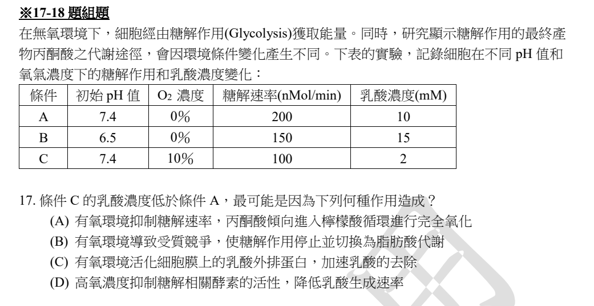
原卷PDF5 · 官方原答案PDF4 · 已核對生物釋疑PDF7–15
官方採計：A 原答案：A
未列於已取得114生物釋疑PDF7–15；依同年度原答案PDF4採計
主分類：Ch09 Cellular Respiration and Fermentation
9.5 / Comparing Fermentation with Anaerobic and Aerobic Respiration
目錄行598；條目起始印刷頁181；實際目錄 PDF37
次分類：Ch09 Cellular Respiration and Fermentation
9.3 / Oxidation of Pyruvate to Acetyl CoA
目錄行572；條目起始印刷頁171；實際目錄 PDF37
主分類理由：氧供應改變丙酮酸去向與乳酸累積，需比較發酵與有氧呼吸。
次分類理由：丙酮酸氧化成乙醯CoA是通往檸檬酸循環的直接步驟。
科學說明：官方A。依題設細胞具呼吸能力，有氧條件可增加丙酮酸氧化；不是有氧即停止糖解或所有細胞皆不產乳酸。保留完整共同表格。
來源涵蓋範圍：Campbell正文支援分類原理；原題與官方釋疑的假設、資料及措辭限制另見科學說明。
教材正文：印刷171／PDF220、印刷172／PDF221、印刷181／PDF230、印刷183／PDF232
補充來源：不需另加課本外具名機制來源
另行比較：題表乳酸降低能否說有氧完全不發酵？
171與181頁是兩種代謝去向比較，不是全稱禁止。維持比較發酵有氧呼吸為主並保留細胞能力假設。
結論：證據確認，分類疑義已解決。完整覆核紀錄
Q18 · 9.5 / Types of Fermentation 正式分類
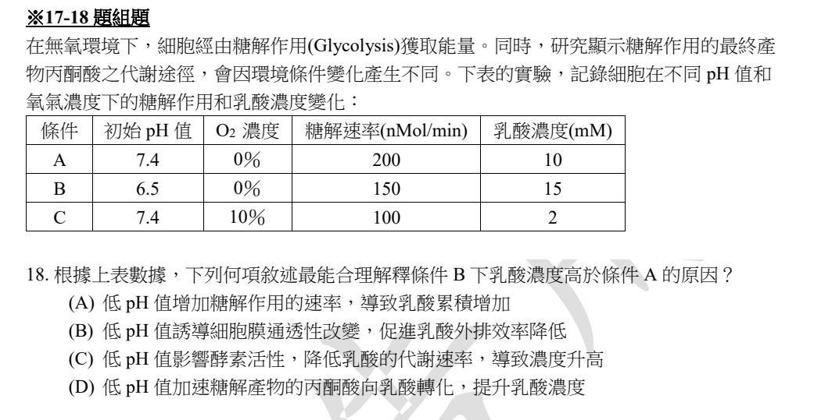
官方採計：D 原答案：D
維持原答案D
主分類：Ch09 Cellular Respiration and Fermentation
9.5 / Types of Fermentation
目錄行595；條目起始印刷頁180；實際目錄 PDF37
次分類：Ch08 An Introduction to Metabolism
8.4 / Effects of Local Conditions on Enzyme Activity
目錄行529；條目起始印刷頁157；實際目錄 PDF37
主分類理由：低pH下丙酮酸還原成乳酸與NAD⁺再生，分類主軸是發酵種類。
次分類理由：酵素活性受局部pH影響提供機制比較框架。
科學說明：官方D並維持。表中糖解速率200→150 nMol/min而乳酸10→15 mM；前者為速率、後者為累積濃度，未給時間/外排/消耗，不能唯一證明低pH提高LDH正向通量。教材支持框架，並未證明釋疑概括的因果。
來源涵蓋範圍：Campbell正文支援分類原理；原題與官方釋疑的假設、資料及措辭限制另見科學說明。
教材正文：印刷157／PDF206、印刷158／PDF207、印刷180／PDF229、印刷181／PDF230
補充來源：不需另加課本外具名機制來源
另行比較：乳酸濃度與糖解速率可否直接比較成LDH通量？
單位、累積與時間資訊不同，不能唯一反推酵素通量；157及180–181頁可確定酵素pH與乳酸發酵的主次歸屬，官方D另以採計欄保存。
結論：證據確認，分類疑義已解決。完整覆核紀錄
Q19 · 10.5 / C4 Plants 正式分類
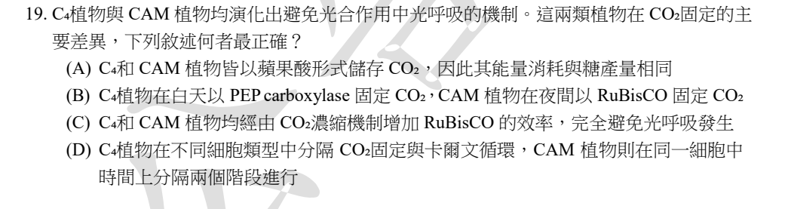
原卷PDF5 · 官方原答案PDF4 · 釋疑PDF12、釋疑PDF13
官方採計：D 原答案：C
原C，官方更正為D
主分類：Ch10 Photosynthesis
10.5 / C4 Plants
目錄行676；條目起始印刷頁203；實際目錄 PDF37
次分類：Ch10 Photosynthesis
10.5 / CAM Plants
目錄行679；條目起始印刷頁205；實際目錄 PDF37
主分類理由：C₄以葉肉與維管束鞘細胞作空間分隔，是直接主條目。
次分類理由：CAM以同細胞晝夜分隔，為同章不可省的比較次條目。
科學說明：原C，官方更正D。兩者均藉先固定CO₂減少光呼吸；C₄空間分隔、CAM時間分隔，不能混同為相同能耗與糖產。
來源涵蓋範圍：Campbell正文支援分類原理；原題與官方釋疑的假設、資料及措辭限制另見科學說明。
教材正文：印刷203／PDF252、印刷204／PDF253、印刷205／PDF254
補充來源：不需另加課本外具名機制來源
另行比較：C₄與CAM是同章能否省略次條目？
203–205頁支持空間/時間分隔；兩個真實最小項均保存。依12–13頁釋疑更正D，章級僅計第10章一次。
結論：證據確認，分類疑義已解決。完整覆核紀錄
Q20 · 15.3 / Mapping the Distance Between Genes Using Recombination Data: Scientific Inquiry 正式分類
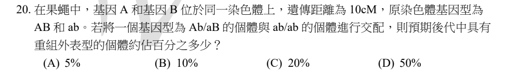
原卷PDF5 · 官方原答案PDF4 · 已核對生物釋疑PDF7–15
官方採計：B 原答案：B
未列於已取得114生物釋疑PDF7–15；依同年度原答案PDF4採計
主分類：Ch15 The Chromosomal Basis of Inheritance
15.3 / Mapping the Distance Between Genes Using Recombination Data: Scientific Inquiry
目錄行961；條目起始印刷頁305；實際目錄 PDF39
次分類：Ch15 The Chromosomal Basis of Inheritance
15.3 / Genetic Recombination and Linkage
目錄行958；條目起始印刷頁302；實際目錄 PDF39
主分類理由：以重組率換算遺傳圖距直接屬利用重組資料定位基因。
次分類理由：連鎖與重組條目用以區分親型和重組型。
科學說明：官方B：通常可重組雌果蠅的10 cM對應約10%重組。題前文AB/ab與實際交配Ab/aB相位不一致；依後者AB、ab為重組型，總和仍10%。未指定性別，雄D. melanogaster通常不重組，另以原始研究摘要記錄此假設。
來源涵蓋範圍：Campbell支援所列分類框架；具名機制或科學界線由列示原始研究/官方來源補足。
教材正文：印刷301／PDF350、印刷302／PDF351、印刷303／PDF352、印刷305／PDF354、印刷306／PDF355
補充來源：S10
另行比較：連鎖相位矛盾與雄蠅無重組是否改變分類？
303、305–306頁圖距原理不受親型標記交換影響；10%須通常可重組的雌蠅條件。原始雄蠅研究补足性別界線，分類仍為圖距計算。
結論：證據確認，分類疑義已解決。完整覆核紀錄
Q21 · 23.4 / Natural Selection: A Closer Look 正式分類
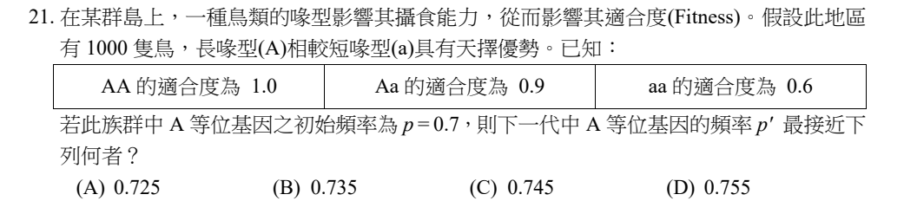
原卷PDF5 · 官方原答案PDF4 · 已核對生物釋疑PDF7–15
官方採計：B 原答案：B
未列於已取得114生物釋疑PDF7–15；依同年度原答案PDF4採計
主分類：Ch23 The Evolution of Populations
23.4 / Natural Selection: A Closer Look
目錄行1465；條目起始印刷頁497；實際目錄 PDF41
次分類：Ch23 The Evolution of Populations
23.2 / The Hardy-Weinberg Equation
目錄行1445；條目起始印刷頁490；實際目錄 PDF41
主分類理由：基因型相對适存度加權後的等位頻率改變，重點是自然選擇的繁殖成功差異。
次分類理由：由p換成p²、2pq、q²的初始比例需要Hardy–Weinberg條件。
科學說明：官方B。假定選擇前HW，p′=(0.49+0.21×0.9)/(0.49+0.42×0.9+0.09×0.6)=0.679/0.922≈0.73644，最接近B 0.735；題幹未明示HW，答案為近似而非精確0.735。
來源涵蓋範圍：Campbell正文支援分類原理；原題與官方釋疑的假設、資料及措辭限制另見科學說明。
教材正文：印刷490／PDF539、印刷491／PDF540、印刷497／PDF546、印刷498／PDF547
補充來源：不需另加課本外具名機制來源
另行比較：0.735是精確結果還是選項近似？
獨立按基因型權重算得0.7364425；B為最接近值，不能改數據使其精確。HW初始假設明列後，選擇與HW主次確定。
結論：證據確認，分類疑義已解決。完整覆核紀錄
Q22 · 14.1 / The Law of Segregation 正式分類
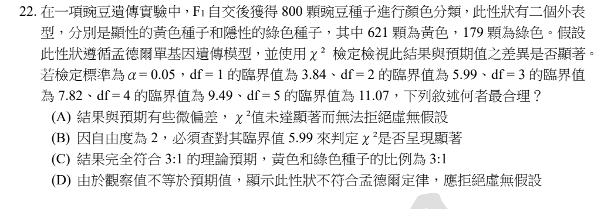
原卷PDF6 · 官方原答案PDF4 · 已核對生物釋疑PDF7–15
官方採計：A 原答案：A
未列於已取得114生物釋疑PDF7–15；依同年度原答案PDF4採計
主分類：Ch14 Mendel and the Gene Idea
14.1 / The Law of Segregation
目錄行872；條目起始印刷頁271；實際目錄 PDF38
主分類理由：621:179與3:1分離比的檢定，本體是單因子孟德爾分離法則。
次分類理由：無；卡方是統計方法，不因教材技能練習放在第15章就另加連鎖分類。
科學說明：官方A。期望600、200，χ²=441/600+441/200=2.94，小於df=1的3.84，不拒絕3:1。教材印刷304／PDF353實有卡方Scientific Skills Exercise，另作方法證據，不偽造本地目錄節點。
來源涵蓋範圍：Campbell正文支援分類原理；原題與官方釋疑的假設、資料及措辭限制另見科學說明。
教材正文：印刷271／PDF320、印刷272／PDF321、印刷273／PDF322、印刷304／PDF353
補充來源：不需另加課本外具名機制來源
另行比較：卡方範例在第15章是否代表題目歸連鎖？
測試的虛無假說為3:1分離，應歸14.1；χ²2.94、df1計算確認。304頁真實技能練習僅作方法證據，不充當虛構TOC節點。
結論：證據確認，分類疑義已解決。完整覆核紀錄
Q23 · 36.3 / Bulk Flow Transport via the Xylem 正式分類
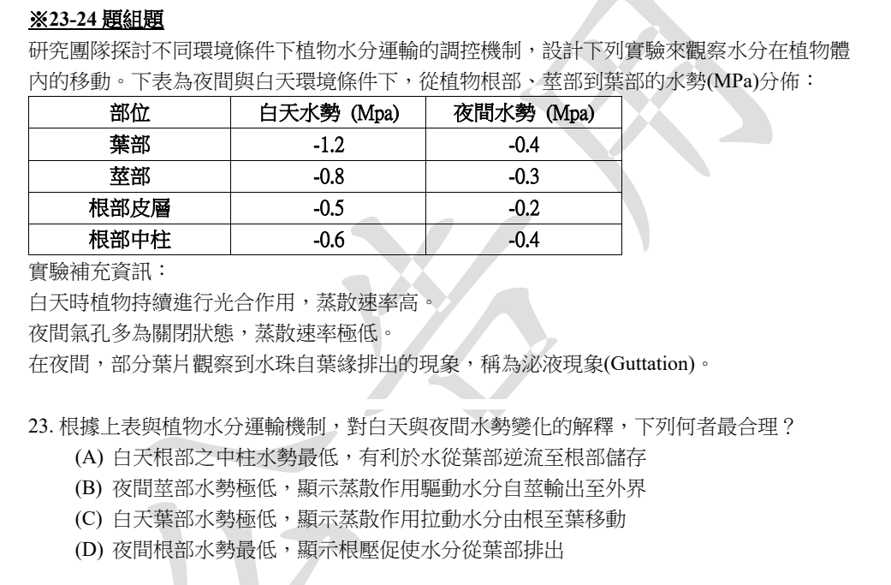
原卷PDF6 · 官方原答案PDF4 · 已核對生物釋疑PDF7–15
官方採計：C 原答案：C
未列於已取得114生物釋疑PDF7–15；依同年度原答案PDF4採計
主分類：Ch36 Resource Acquisition and Transport in Vascular Plants
36.3 / Bulk Flow Transport via the Xylem
目錄行2381；條目起始印刷頁792；實際目錄 PDF45
次分類：Ch36 Resource Acquisition and Transport in Vascular Plants
36.2 / Short-Distance Transport of Water Across Plasma Membranes
目錄行2365；條目起始印刷頁788；實際目錄 PDF45
主分類理由：白天蒸散造成木質部張力及水上升，直接屬木質部質量流運輸。
次分類理由：水勢由高到低流動的定義用於讀表中負水勢。
科學說明：官方C。白天葉片−1.2 MPa最低，可由蒸散與凝聚張力解讀；不是因水只由高壓流到低壓而忽略總水勢。
來源涵蓋範圍：Campbell正文支援分類原理；原題與官方釋疑的假設、資料及措辭限制另見科學說明。
教材正文：印刷788／PDF837、印刷789／PDF838、印刷790／PDF839、印刷793／PDF842、印刷794／PDF843、印刷795／PDF844
補充來源：不需另加課本外具名機制來源
另行比較：負水勢最小值與負壓是否混淆？
788–790頁水勢定義與793–795頁凝聚張力共同支持，主木質部運輸、次跨膜水移動；完整日間表數值保留。
結論：證據確認，分類疑義已解決。完整覆核紀錄
Q24 · 36.3 / Bulk Flow Transport via the Xylem 正式分類
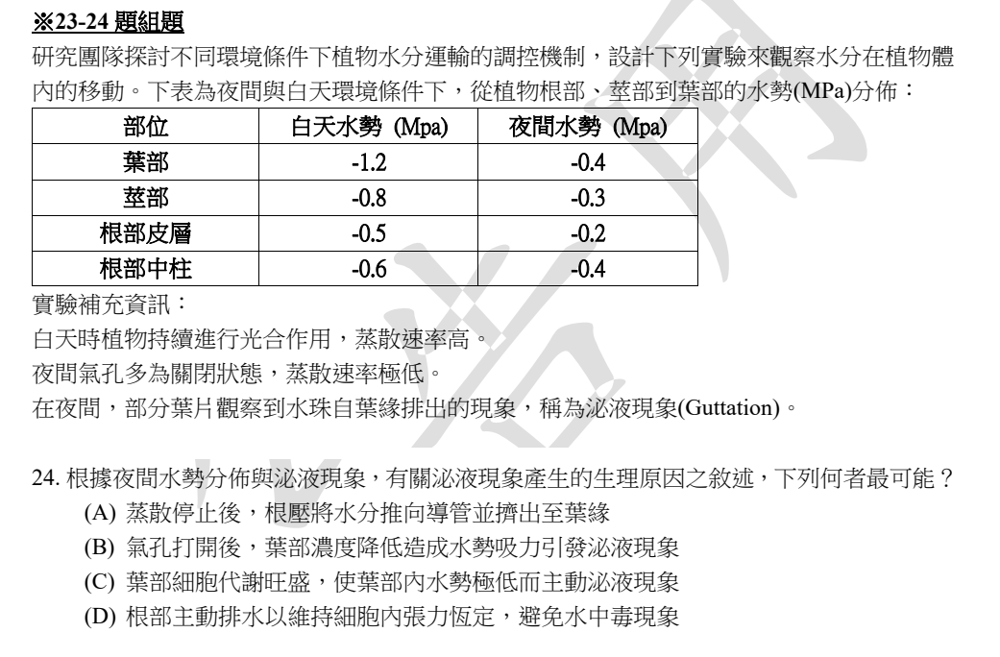
原卷PDF6 · 官方原答案PDF4 · 已核對生物釋疑PDF7–15
官方採計：A 原答案：A
未列於已取得114生物釋疑PDF7–15；依同年度原答案PDF4採計
主分類：Ch36 Resource Acquisition and Transport in Vascular Plants
36.3 / Bulk Flow Transport via the Xylem
目錄行2381；條目起始印刷頁792；實際目錄 PDF45
次分類：Ch36 Resource Acquisition and Transport in Vascular Plants
36.2 / Short-Distance Transport of Water Across Plasma Membranes
目錄行2365；條目起始印刷頁788；實際目錄 PDF45
主分類理由：夜間吐水現象的根壓位於木質部運輸條目。
次分類理由：水勢與壓力勢的區別用以檢查表格自洽性。
科學說明：官方A。吐水可支持根壓，但夜表中柱−0.4至莖−0.3 MPa並非總水勢順梯度，不能據此證成整條持續穩態上行水流；總水勢也不等於壓力勢。保留數據差異，不更改原表。
來源涵蓋範圍：Campbell正文支援分類原理；原題與官方釋疑的假設、資料及措辭限制另見科學說明。
教材正文：印刷788／PDF837、印刷793／PDF842
補充來源：不需另加課本外具名機制來源
另行比較：吐水能否讓夜間全部水勢讀值自洽？
−0.4至−0.3的總水勢梯度不能推出穩態上行。根壓仍是已給吐水現象的直接機制，資料限制與分類結論分開保存。
結論：證據確認，分類疑義已解決。完整覆核紀錄
Q25 · 37.3 / Bacteria and Plant Nutrition 正式分類
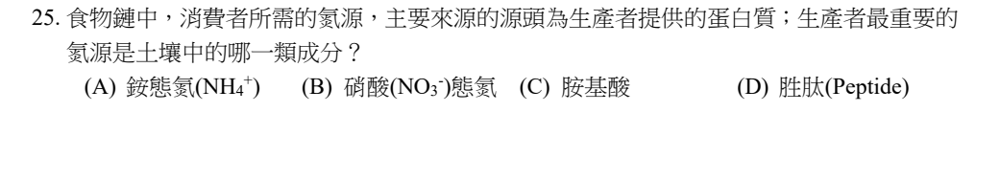
官方採計：B 原答案：B
維持原答案B
主分類：Ch37 Soil and Plant Nutrition
37.3 / Bacteria and Plant Nutrition
目錄行2463；條目起始印刷頁814；實際目錄 PDF45
主分類理由：土壤氮轉化及植物利用硝酸鹽，直接歸細菌與植物營養條目。
次分類理由：無；礦質營養背景不足以另增一個重複主題。
科學說明：官方B並維持。教材支持NO₃⁻常為主要可吸收氮源，也明載植物可用NH₄⁺；依土壤與物種而變，不擴張成所有植物唯一氮源。
來源涵蓋範圍：Campbell正文支援分類原理；原題與官方釋疑的假設、資料及措辭限制另見科學說明。
教材正文：印刷810／PDF859、印刷814／PDF863、印刷815／PDF864
補充來源：不需另加課本外具名機制來源
另行比較：NO₃⁻是否排除NH₄⁺吸收？
815頁兩者可用；採B時保留常見土壤情境，不加「唯一」字眼。直接歸植物营養相關細菌條目足夠。
結論：證據確認，分類疑義已解決。完整覆核紀錄
Q26 · 36.5 / Bulk Flow by Positive Pressure: The Mechanism of Translocation in Angiosperms 正式分類
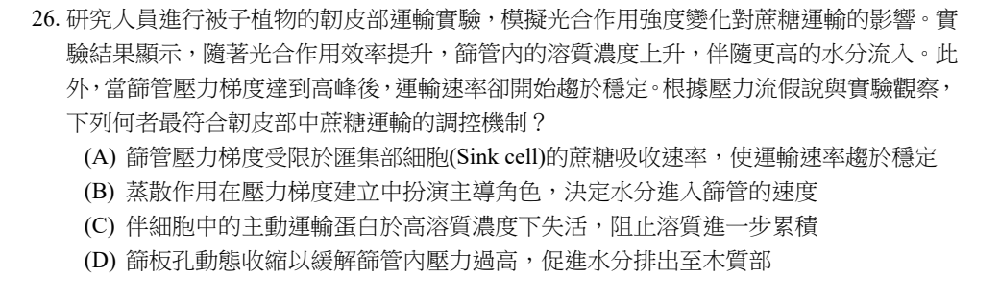
原卷PDF7 · 官方原答案PDF4 · 已核對生物釋疑PDF7–15
官方採計：A 原答案：A
未列於已取得114生物釋疑PDF7–15；依同年度原答案PDF4採計
主分類：Ch36 Resource Acquisition and Transport in Vascular Plants
36.5 / Bulk Flow by Positive Pressure: The Mechanism of Translocation in Angiosperms
目錄行2413；條目起始印刷頁800；實際目錄 PDF45
次分類：Ch36 Resource Acquisition and Transport in Vascular Plants
36.5 / Movement from Sugar Sources to Sugar Sinks
目錄行2410；條目起始印刷頁799；實際目錄 PDF45
主分類理由：蔗糖流動由源庫間正壓差驅動，直接採正壓質量流條目。
次分類理由：源與庫糖裝卸決定滲透與壓力差，為機制次條目。
科學說明：官方A。依壓流模型分析卸載不足對源庫梯度的影響；題目未提供各步實測通量，不能主張現實所有植物僅由單一步驟限速。
來源涵蓋範圍：Campbell正文支援分類原理；原題與官方釋疑的假設、資料及措辭限制另見科學說明。
教材正文：印刷799／PDF848、印刷800／PDF849、印刷801／PDF850
補充來源：不需另加課本外具名機制來源
另行比較：應歸源庫還是正壓流？
题目所求長距離移動受壓差驅動，800頁正壓流最直接；799頁裝卸是上游條件。未给實測資料不能認定普遍限速步驟。
結論：證據確認，分類疑義已解決。完整覆核紀錄
Q27 · 9.6 / Biosynthesis (Anabolic Pathways) 正式分類
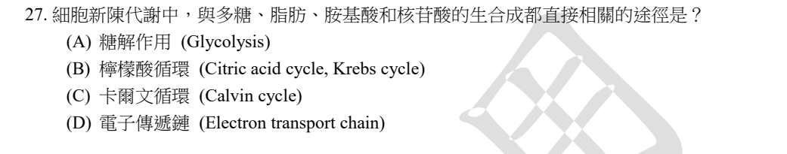
官方採計：A 原答案：A
維持原答案A
主分類：Ch09 Cellular Respiration and Fermentation
9.6 / Biosynthesis (Anabolic Pathways)
目錄行611；條目起始印刷頁183；實際目錄 PDF37
次分類：Ch09 Cellular Respiration and Fermentation
9.2 / Glycolysis harvests chemical energy by oxidizing glucose to pyruvate
目錄行564；條目起始印刷頁170；實際目錄 PDF37
主分類理由：糖解及呼吸中間物供合成反應，直接屬生物合成條目。
次分類理由：糖解作用本身是目錄無更小子條目的概念節點，保留供應碳骨架的來源。
科學說明：官方A並維持。多類分子合成與中心代謝相接；不表示糖解每步皆可逆，亦不表示所有核苷酸直接由糖解單一路徑合成。教材183–184頁區分碳骨架供應及調控。
來源涵蓋範圍：Campbell正文支援分類原理；原題與官方釋疑的假設、資料及措辭限制另見科學說明。
教材正文：印刷170／PDF219、印刷182／PDF231、印刷183／PDF232、印刷184／PDF233
補充來源：不需另加課本外具名機制來源
另行比較：生合成連接是否等於所有糖解反應可逆？
183–184頁顯示碳骨架連接與調控，170頁提供糖解框架；排除「皆可逆」過度延伸，主生合成次糖解確定。
結論：證據確認，分類疑義已解決。完整覆核紀錄
Q28 · 9.4 / An Accounting of ATP Production by Cellular Respiration 正式分類
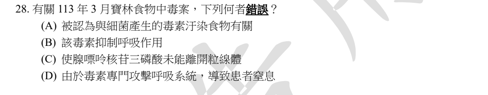
原卷PDF7 · 官方原答案PDF4 · 已核對生物釋疑PDF7–15
官方採計：D 原答案：D
未列於已取得114生物釋疑PDF7–15；依同年度原答案PDF4採計
主分類：Ch09 Cellular Respiration and Fermentation
9.4 / An Accounting of ATP Production by Cellular Respiration
目錄行588；條目起始印刷頁177；實際目錄 PDF37
次分類：Ch27 Bacteria and Archaea
27.6 / Pathogenic Bacteria
目錄行1774；條目起始印刷頁588；實際目錄 PDF42
主分類理由：米酵菌酸影響粒線體能量利用，最貼近可驗證的框架是ATP產量收支。
次分類理由：病原細菌毒素條目交代中毒背景；具名毒素作用由原始研究補足。
科學說明：官方D為錯誤敘述。Bongkrekic acid抑制ANT的ADP/ATP交換，不宜誤称直接結合電子傳遞鏈成員；影響細胞能量不限呼吸系統。教材不直接講此毒素，細胞實驗證據不冒充臨床全器官研究。
來源涵蓋範圍：Campbell支援所列分類框架；具名機制或科學界線由列示原始研究/官方來源補足。
教材正文：印刷177／PDF226、印刷178／PDF227、印刷588／PDF637
補充來源：S01
另行比較：毒素是否直接阻斷ETC複合體？
原始細胞實驗摘要指出ANT ADP/ATP交換抑制，與ETC成員不同。教材ATP框架與病原毒素背景分列，具名機制不偽稱出自Campbell。
結論：證據確認，分類疑義已解決。完整覆核紀錄
Q29 · 9.4 / Chemiosmosis: The Energy-Coupling Mechanism 正式分類
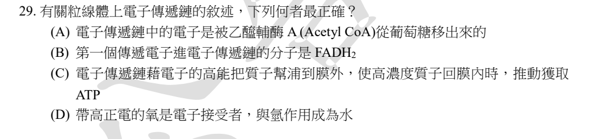
官方採計：C 原答案：C
維持原答案C
主分類：Ch09 Cellular Respiration and Fermentation
9.4 / Chemiosmosis: The Energy-Coupling Mechanism
目錄行585；條目起始印刷頁175；實際目錄 PDF37
次分類：Ch09 Cellular Respiration and Fermentation
9.4 / The Pathway of Electron Transport
目錄行582；條目起始印刷頁174；實際目錄 PDF37
主分類理由：質子梯度與ATP合成的偶聯屬化學滲透。
次分類理由：電子傳遞路徑建立跨內膜H⁺梯度，為上游次條目。
科學說明：官方C並維持。H⁺由基質泵至膜間腔，再沿梯度經ATP合酶回流；氧為末端電子受體，不能以氧帶正電或直接產ATP解釋。
來源涵蓋範圍：Campbell正文支援分類原理；原題與官方釋疑的假設、資料及措辭限制另見科學說明。
教材正文：印刷174／PDF223、印刷175／PDF224、印刷176／PDF225、印刷177／PDF226
補充來源：不需另加課本外具名機制來源
另行比較：梯度形成與ATP偶聯誰是主題？
題問H⁺跨膜作用於ATP，175–177頁化學滲透直接回答；174頁電子傳遞為建立梯度的次機制。
結論：證據確認，分類疑義已解決。完整覆核紀錄
Q30 · 55.4 / Biogeochemical Cycles 正式分類
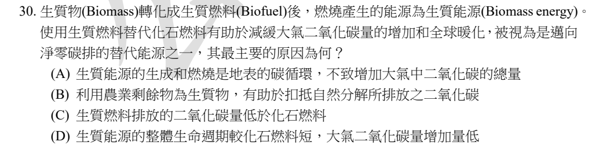
原卷PDF7 · 官方原答案PDF4 · 已核對生物釋疑PDF7–15
官方採計：A 原答案：A
未列於已取得114生物釋疑PDF7–15；依同年度原答案PDF4採計
主分類：Ch55 Ecosystems and Restoration Ecology
55.4 / Biogeochemical Cycles
目錄行3712；條目起始印刷頁1249；實際目錄 PDF50
次分類：Ch56 Conservation Biology and Global Change
56.4 / Greenhouse Gases and Climate Change
目錄行3787；條目起始印刷頁1278；實際目錄 PDF50
主分類理由：生質碳燃燒與近期固定的CO₂相連，主軸是生地化碳循環。
次分類理由：化石碳排放與溫室氣體影響是比較背景。
科學說明：官方A採理想近期碳循環模型。生質燃料實際淨排放仍取決於種植、加工、運輸及土地利用變更；原始研究模型提供反例，不能以此題宣稱所有生質燃料生命週期零排放。
來源涵蓋範圍：Campbell支援所列分類框架；具名機制或科學界線由列示原始研究/官方來源補足。
教材正文：印刷1249／PDF1298、印刷1250／PDF1299、印刷1251／PDF1300、印刷1278／PDF1327、印刷1279／PDF1328、印刷1280／PDF1329
補充來源：S08
另行比較：短期碳循環可否直接當零生命週期排放？
教材碳循環只支持碳來源比較；原始土地利用模型反例阻止零排放概括。主55.4與次56.4的範圍確認。
結論：證據確認，分類疑義已解決。完整覆核紀錄
Q31 · 26.2 / Sorting Homology from Analogy 正式分類
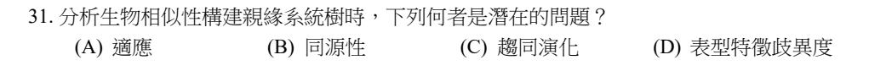
原卷PDF7 · 官方原答案PDF4 · 已核對生物釋疑PDF7–15
官方採計：C 原答案：C
未列於已取得114生物釋疑PDF7–15；依同年度原答案PDF4採計
主分類：Ch26 Phylogeny and the Tree of Life
26.2 / Sorting Homology from Analogy
目錄行1649；條目起始印刷頁558；實際目錄 PDF42
主分類理由：類似環境造成趨同而非共同祖先同源，直接屬辨別同源與同功。
次分類理由：無；建樹是應用背景，判別瓶頸已由最小條目完整涵蓋。
科學說明：官方C。外形類似可由獨立演化形成，故未區分同功與同源會誤判親緣；應用其他可比較性狀或分子證據檢驗。
來源涵蓋範圍：Campbell正文支援分類原理；原題與官方釋疑的假設、資料及措辭限制另見科學說明。
教材正文：印刷558／PDF607、印刷559／PDF608
補充來源：不需另加課本外具名機制來源
另行比較：相似性可否直接表示近親？
558–559頁直接區分同功同源，趨同為反例；真實最小條目可完整容納判別，不再加無實際作用次章。
結論：證據確認，分類疑義已解決。完整覆核紀錄
Q32 · 28.5 / Opisthokonts 正式分類
官方採計：C 原答案：C
維持原答案C
主分類：Ch28 Protists
28.5 / Opisthokonts
目錄行1840；條目起始印刷頁613；實際目錄 PDF42
次分類：Ch32 An Overview of Animal Diversity
32.2 / Steps in the Origin of Multicellular Animals
目錄行2048；條目起始印刷頁675；實際目錄 PDF43
主分類理由：比較動物、真菌及所謂原生動物的親緣，直接對照Opisthokonts。
次分類理由：動物起源正文直接列出領鞭毛蟲為最近現生親屬，提供反例證據。
科學說明：官方C並維持。真菌與動物同屬後鞭毛生物，但廣義「原生動物」不是單系群，若包含領鞭毛蟲，其比真菌更近動物。保留選項分類尺度不齊的問題，不把官方C升格成無條件科學命題。
來源涵蓋範圍：Campbell正文支援分類原理；原題與官方釋疑的假設、資料及措辭限制另見科學說明。
教材正文：印刷613／PDF662、印刷659／PDF708、印刷675／PDF724、印刷676／PDF725
補充來源：不需另加課本外具名機制來源
另行比較：廣義原生動物是否是可與真菌並列的單系群？
613及675–676頁領鞭毛蟲與動物關係直接顯示分類尺度問題。保留官方C，同時採後鞭毛生物與動物起源兩個真實節點。
結論：證據確認，分類疑義已解決。完整覆核紀錄
Q33 · 32.2 / Steps in the Origin of Multicellular Animals 正式分類
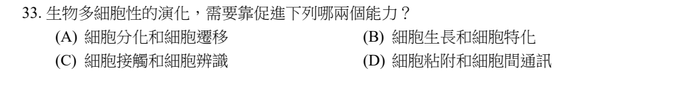
原卷PDF8 · 官方原答案PDF4 · 已核對生物釋疑PDF7–15
官方採計：D 原答案：D
未列於已取得114生物釋疑PDF7–15；依同年度原答案PDF4採計
主分類：Ch32 An Overview of Animal Diversity
32.2 / Steps in the Origin of Multicellular Animals
目錄行2048；條目起始印刷頁675；實際目錄 PDF43
次分類：Ch25 The History of Life on Earth
25.3 / The Origin of Multicellularity
目錄行1573；條目起始印刷頁535；實際目錄 PDF41
主分類理由：動物多細胞起源條目直接討論細胞黏附及細胞間訊息相關基因。
次分類理由：多細胞性起源提供更廣演化背景，與動物專屬機制分開。
科學說明：官方D。黏附使細胞維持接觸，通訊協調分工；教材675–676頁有直接依據，不自造「多細胞性機制」目錄名稱。
來源涵蓋範圍：Campbell正文支援分類原理；原題與官方釋疑的假設、資料及措辭限制另見科學說明。
教材正文：印刷535／PDF584、印刷536／PDF585、印刷675／PDF724、印刷676／PDF725
補充來源：不需另加課本外具名機制來源
另行比較：是否只能用25.3的廣義多細胞起源？
675–676頁直接提黏附及訊息基因，比535頁一般背景更近考點，故主32.2、次25.3。
結論：證據確認，分類疑義已解決。完整覆核紀錄
Q34 · 31.1 / Nutrition and Ecology 正式分類
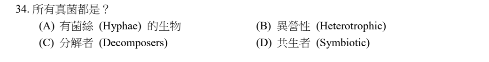
官方採計：B 原答案：C
原C，官方更正為B
主分類：Ch31 Fungi
31.1 / Nutrition and Ecology
目錄行1966；條目起始印刷頁655；實際目錄 PDF43
主分類理由：真菌以吸收方式異營，直接屬Nutrition and Ecology。
次分類理由：無；菌絲構造是干擾選項，未另考其機制。
科學說明：原C更正B。真菌全為異營，但不全為分解者，也不全有典型菌絲（酵母可單細胞）；正式採計依114釋疑。
來源涵蓋範圍：Campbell正文支援分類原理；原題與官方釋疑的假設、資料及措辭限制另見科學說明。
教材正文：印刷655／PDF704、印刷656／PDF705
補充來源：不需另加課本外具名機制來源
另行比較：異營、分解者與菌絲能否互換？
655–656頁區分異營共同性與多樣生態、形態；更正B有直接教材依據，C菌絲並非所有真菌皆有。
結論：證據確認，分類疑義已解決。完整覆核紀錄
Q35 · 27.6 / Pathogenic Bacteria 正式分類
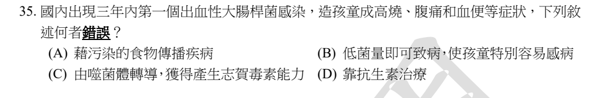
官方採計：D 原答案：D
維持原答案D
主分類：Ch27 Bacteria and Archaea
27.6 / Pathogenic Bacteria
目錄行1774；條目起始印刷頁588；實際目錄 PDF42
次分類：Ch27 Bacteria and Archaea
27.2 / Genetic Recombination
目錄行1728；條目起始印刷頁579；實際目錄 PDF39、PDF42
主分類理由：EHEC致病與毒素為病原細菌的直接主題。
次分類理由：噬菌體介導基因轉移說明毒素性狀可能由水平轉移獲得。
科學說明：官方D為錯誤選項並維持。CDC對STEC指出抗菌藥可能增加HUS風險，支援本題辨別；此為題目科學核對，不能推成所有E. coli感染皆同一處置。
來源涵蓋範圍：Campbell支援所列分類框架；具名機制或科學界線由列示原始研究/官方來源補足。
教材正文：印刷579／PDF628、印刷580／PDF629、印刷588／PDF637
補充來源：S02
另行比較：STEC抗菌藥證據能否泛用全部E. coli？
CDC指向STEC及HUS風險，範圍限定與本題一致；噬菌體水平轉移是獨立次機制。官方D保持且未延伸成通用醫療建議。
結論：證據確認，分類疑義已解決。完整覆核紀錄
Q36 · 53.1 / Density and Dispersion 正式分類
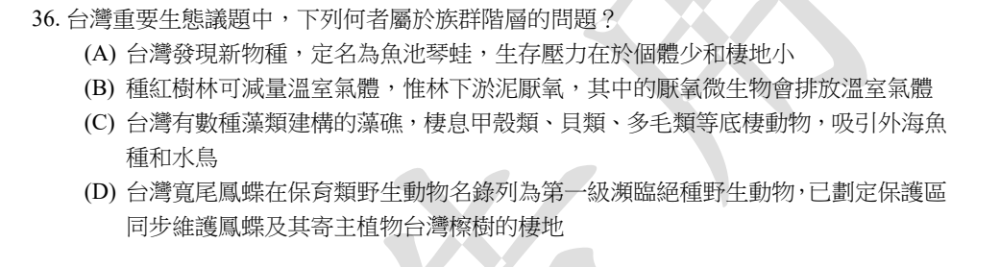
原卷PDF8 · 官方原答案PDF4 · 已核對生物釋疑PDF7–15
官方採計：A 原答案：A
未列於已取得114生物釋疑PDF7–15；依同年度原答案PDF4採計
主分類：Ch53 Population Ecology
53.1 / Density and Dispersion
目錄行3531；條目起始印刷頁1191；實際目錄 PDF49
主分類理由：同一區域同種蛙的有限個體群體，是族群數量及分布條目的基本單位。
次分類理由：無；其他物種、非生物因子分別屬群落或生態系尺度，不是本題主軸。
科學說明：官方A。判準是同種、特定地點與時段的個體集合，不是新種命名或整個棲地所有生物。
來源涵蓋範圍：Campbell正文支援分類原理；原題與官方釋疑的假設、資料及措辭限制另見科學說明。
教材正文：印刷1191／PDF1240、印刷1192／PDF1241
補充來源：不需另加課本外具名機制來源
另行比較：同一地點各物種可否仍稱族群？
1191頁定義需同種且共同區域，A符合，其他尺度排除；不因發現新蛙種背景改歸分類學。
結論：證據確認，分類疑義已解決。完整覆核紀錄
Q37 · 17.1 / Evidence from Studying Metabolic Defects 正式分類
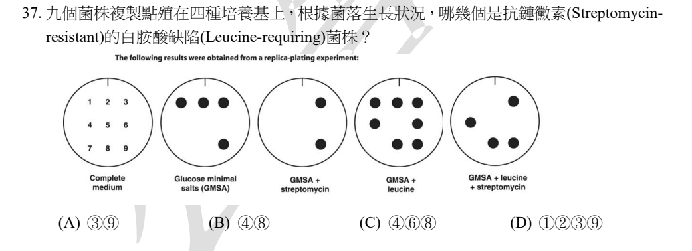
原卷PDF8 · 官方原答案PDF4 · 已核對生物釋疑PDF7–15
官方採計：B 原答案：B
未列於已取得114生物釋疑PDF7–15；依同年度原答案PDF4採計
主分類：Ch17 Gene Expression: From Gene to Protein
17.1 / Evidence from Studying Metabolic Defects
目錄行1036；條目起始印刷頁336；實際目錄 PDF39
次分類：Ch27 Bacteria and Archaea
27.6 / Antibiotic Resistance
目錄行1777；條目起始印刷頁588；實際目錄 PDF42
主分類理由：以最小培養基和補充白胺酸比較代謝缺陷，直接採代謝缺陷研究證據條目。
次分類理由：鏈黴素條件辨別抗生素抗性，與營養需求是獨立的第二性狀。
科學說明：官方B即4、8。原圖GMSA有1、2、3、9；加鏈黴素有3、9；加白胺酸有1、2、3、4、6、8、9；兩者皆加有3、4、8、9。需白胺酸且耐藥者為4、8。Campbell為Neurospora代謝缺陷框架，不冒稱原書有這張細菌圖。
來源涵蓋範圍：Campbell正文支援分類原理；原題與官方釋疑的假設、資料及措辭限制另見科學說明。
教材正文：印刷336／PDF385、印刷337／PDF386、印刷338／PDF387、印刷588／PDF637
補充來源：不需另加課本外具名機制來源
另行比較：需白胺酸且耐藥的交集是否為3、9？
3、9不需補白胺酸，應排除；4、8缺補充時不長、兩者皆加時生長。四培養條件逐格比較後交集4、8確認，營養缺陷與抗性分列。
結論：證據確認，分類疑義已解決。完整覆核紀錄
Q38 · 38.3 / Plant Biotechnology and Genetic Engineering 正式分類
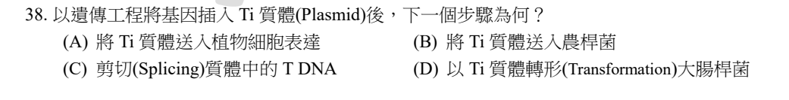
官方採計：B 原答案：B
維持原答案B
主分類：Ch38 Angiosperm Reproduction and Biotechnology
38.3 / Plant Biotechnology and Genetic Engineering
目錄行2527；條目起始印刷頁837；實際目錄 PDF45
主分類理由：以農桿菌Ti載體導入植物基因屬植物生物科技與基因工程。
次分類理由：無；此具體植物轉殖流程比泛用DNA選殖更精準。
科學說明：官方B並維持：將重組Ti相關載體置入Agrobacterium，再與植物細胞共培養。Campbell837頁提供植物基因工程框架；Ti步驟另以Fraley等1983原始實驗摘要佐證，不宣稱本地課本有Ti流程圖。
來源涵蓋範圍：Campbell支援所列分類框架；具名機制或科學界線由列示原始研究/官方來源補足。
教材正文：印刷836／PDF885、印刷837／PDF886
補充來源：S09
另行比較：是否能把Ti步驟直接標為課本原文？
837頁僅給植物基因工程框架；Fraley1983摘要直接報導Ti載體與農桿菌共培養轉殖。主38.3有依據，具體流程的外部來源明確標示。
結論：證據確認，分類疑義已解決。完整覆核紀錄
Q39 · 27.6 / Antibiotic Resistance 正式分類
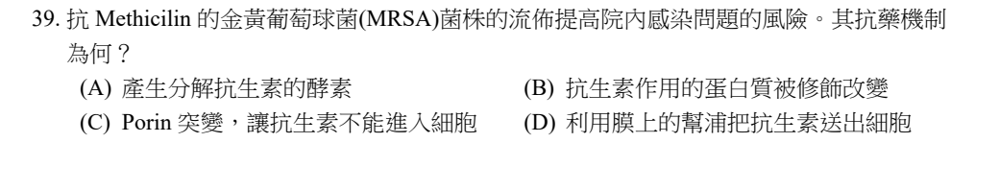
官方採計：B 原答案：B
維持原答案B
主分類：Ch27 Bacteria and Archaea
27.6 / Antibiotic Resistance
目錄行1777；條目起始印刷頁588；實際目錄 PDF42
主分類理由：MRSA耐藥機制直接歸抗生素抗性。
次分類理由：無；藥物作用靶標是此同一機制，不泛加蛋白質章。
科學說明：官方B並維持。CDC資料支持mecA編碼PBP2a對β-lactam親和力低，屬靶蛋白改變，並非必然增加藥物排出或只靠β-lactamase。
來源涵蓋範圍：Campbell支援所列分類框架；具名機制或科學界線由列示原始研究/官方來源補足。
教材正文：印刷588／PDF637、印刷589／PDF638
補充來源：S03
另行比較：耐藥是分解藥物還是作用靶點改變？
CDC mecA/PBP2a資料與588–589頁抗性框架一致，支持B靶蛋白低親和力；未誤判成所有抗性均由同一機制。
結論：證據確認，分類疑義已解決。完整覆核紀錄
Q40 · 27.6 / Pathogenic Bacteria 正式分類
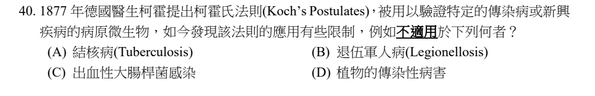
官方採計：D 原答案：B
原B，官方更正為D
主分類：Ch27 Bacteria and Archaea
27.6 / Pathogenic Bacteria
目錄行1774；條目起始印刷頁588；實際目錄 PDF42
次分類：Ch01 Evolution, the Themes of Biology, and Scientific Inquiry
1.3 / Forming and Testing Hypotheses
目錄行44；條目起始印刷頁17；實際目錄 PDF35
主分類理由：Koch原則辨識感染致病因果，最貼近病原細菌主題。
次分類理由：形成與檢驗假說補足分離、接種與再分離的因果驗證方法。
科學說明：原B官方更正D。但植物疾病並非Koch原則一般不適用的類別；APS植物病理教學實際使用此原則檢驗植物病。教材不直接列Koch全步驟，方法由APS補足。分類已由證據確定，官方答案與科學衝突明示保留。
來源涵蓋範圍：Campbell支援所列分類框架；具名機制或科學界線由列示原始研究/官方來源補足。
教材正文：印刷17／PDF66、印刷18／PDF67、印刷588／PDF637
補充來源：S04
另行比較：官方D植物病是否真為Koch原則例外？
APS植物接種再分離教學直接構成反例，不能科學認同D的一般斷言。分類根據感染致病因果已解決；另明標SOURCE_CONFLICT_RETAINED，不偽稱官方與科學一致。
結論：證據確認，分類疑義已解決。完整覆核紀錄
Q41 · 27.6 / Pathogenic Bacteria 正式分類
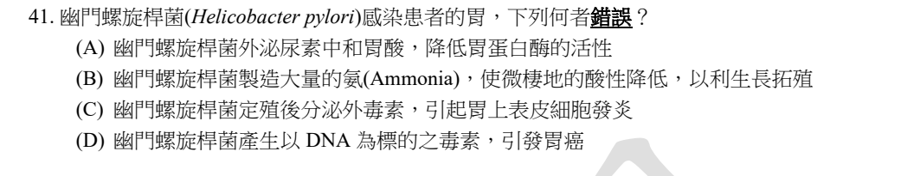
原卷PDF9 · 官方原答案PDF4 · 已核對生物釋疑PDF7–15
官方採計：A 原答案：A
未列於已取得114生物釋疑PDF7–15；依同年度原答案PDF4採計
主分類：Ch27 Bacteria and Archaea
27.6 / Pathogenic Bacteria
目錄行1774；條目起始印刷頁588；實際目錄 PDF42
主分類理由：幽門螺旋桿菌致病及毒素敘述直接歸病原細菌。
次分類理由：無；胃的酸性環境是例子背景，題目主要辨別細菌的致病機制。
科學說明：官方A：urease分解尿素產生氨，不是分泌尿素來中和酸。感染造成DNA損傷有原始實驗支持，但不能據此認定D所述毒素必以DNA為直接標的；此措辭範圍另存，不把感染層次研究冒充直接毒素靶點實驗。
來源涵蓋範圍：Campbell支援所列分類框架；具名機制或科學界線由列示原始研究/官方來源補足。
教材正文：印刷588／PDF637
補充來源：S05
另行比較：urease與urea是否混用？
尿素酶原始研究支持利用尿素產氨而非分泌尿素。另查感染DNA損傷研究，未把DNA損傷等同唯一直接毒素靶點；主病原細菌確定。
結論：證據確認，分類疑義已解決。完整覆核紀錄
Q42 · 20.4 / Forensic Evidence and Genetic Profiles 正式分類
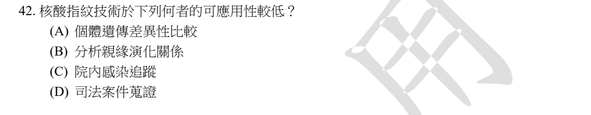
官方採計：B 原答案：B
維持原答案B
主分類：Ch20 DNA Tools and Biotechnology
20.4 / Forensic Evidence and Genetic Profiles
目錄行1277；條目起始印刷頁436；實際目錄 PDF40
次分類：Ch26 Phylogeny and the Tree of Life
26.2 / Evaluating Molecular Homologies
目錄行1652；條目起始印刷頁559；實際目錄 PDF42
主分類理由：核酸指紋用於個體或樣本識別，直接屬法醫證據與遺傳圖譜。
次分類理由：演化親緣推論需比較分子同源性，是題目相對不適用途的對照。
科學說明：官方B並維持。STR等指紋適合身分或親緣鑑定；較深層演化常需序列同源比較。是資料尺度與用途的相對適合度，不是所有指紋資訊絕不可研究親緣。
來源涵蓋範圍：Campbell正文支援分類原理；原題與官方釋疑的假設、資料及措辭限制另見科學說明。
教材正文：印刷436／PDF485、印刷437／PDF486、印刷558／PDF607、印刷559／PDF608
補充來源：不需另加課本外具名機制來源
另行比較：指紋是否完全不含演化資訊？
436頁個體識別與559頁分子同源比較區分資料用途；本題B是相對適合度，保留尺度限制而非绝對否定。
結論：證據確認，分類疑義已解決。完整覆核紀錄
Q43 · 27.2 / Genetic Recombination 正式分類
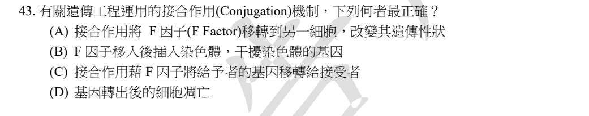
原卷PDF9 · 官方原答案PDF4 · 釋疑PDF13、釋疑PDF14
官方採計：C 原答案：C
維持原答案C
主分類：Ch27 Bacteria and Archaea
27.2 / Genetic Recombination
目錄行1728；條目起始印刷頁579；實際目錄 PDF39、PDF42
主分類理由：細菌接合與F因子介導DNA傳送直接屬基因重組條目。
次分類理由：無；F⁺及Hfr都在此最小條目中，無需另造節點。
科學說明：官方C並維持。供體傳送DNA後仍可存活；釋疑把接受F因子等同直接變Hfr並不準確。F⁺的F因子在質體，整合入染色體才是Hfr；一般未完成全部染色體轉移時受體仍可為F⁻。
來源涵蓋範圍：Campbell正文支援分類原理；原題與官方釋疑的假設、資料及措辭限制另見科學說明。
教材正文：印刷579／PDF628、印刷580／PDF629、印刷581／PDF630
補充來源：不需另加課本外具名機制來源
另行比較：接受F因子是否自動成為Hfr？
580–581頁明確區分質體F⁺與整合染色體Hfr，釋疑混用需註記；C供體傳送遺傳物質符合核心，分類仍在27.2最小項。
結論：證據確認，分類疑義已解決。完整覆核紀錄
Q44 · 13.2 / The Variety of Sexual Life Cycles 正式分類
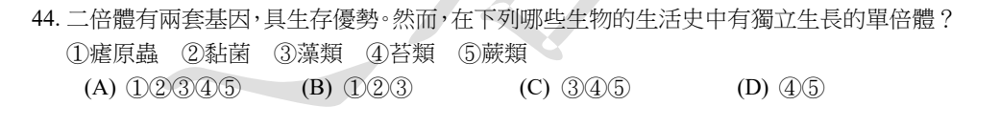
官方採計：A 原答案：A
維持原答案A
主分類：Ch13 Meiosis and Sexual Life Cycles
13.2 / The Variety of Sexual Life Cycles
目錄行830；條目起始印刷頁258；實際目錄 PDF38
次分類：Ch28 Protists
28.3 / Alveolates
目錄行1817；條目起始印刷頁604；實際目錄 PDF42
次分類：Ch28 Protists
28.5 / Amoebozoans
目錄行1837；條目起始印刷頁612；實際目錄 PDF42
次分類：Ch28 Protists
28.4 / Green Algae
目錄行1830；條目起始印刷頁610；實際目錄 PDF42、PDF43
次分類：Ch29 Plant Diversity I: How Plants Colonized Land
29.2 / Bryophyte Gametophytes
目錄行1877；條目起始印刷頁624；實際目錄 PDF43
次分類：Ch29 Plant Diversity I: How Plants Colonized Land
29.3 / Origins and Traits of Vascular Plants
目錄行1890；條目起始印刷頁629；實際目錄 PDF43
主分類理由：跨多類群辨別單倍體階段及可生長世代，主軸為有性生活史多樣性。
次分類理由：逐一保留瘧原蟲、黏菌、綠藻、苔蘚與蕨類的真實最小目錄；同章多条目保留且章級去重。
科學說明：官方A即I–V。可生長或增殖的單倍體不等於能脫離宿主自由生活；瘧原蟲仍為寄生者。各生活史按課本606、611、613、624–625、630頁核對，不泛稱所有藻類生活史相同。
來源涵蓋範圍：Campbell正文支援分類原理；原題與官方釋疑的假設、資料及措辭限制另見科學說明。
教材正文：印刷258／PDF307、印刷259／PDF308、印刷604／PDF653、印刷605／PDF654、印刷606／PDF655、印刷610／PDF659、印刷611／PDF660、印刷612／PDF661、印刷613／PDF662、印刷624／PDF673、印刷625／PDF674、印刷629／PDF678、印刷630／PDF679
補充來源：不需另加課本外具名機制來源
另行比較：獨立生長單倍體是否等於自由生活？
各類群正文與生活史顯示單倍體可增殖；瘧原蟲寄生界線不能刪。13.2作比較主軸，五個分類對應條目保留且章級去重。
結論：證據確認，分類疑義已解決。完整覆核紀錄
Q45 · 9.4 / The Pathway of Electron Transport 正式分類
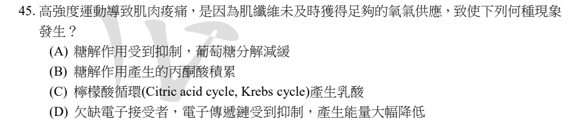
官方採計：D 原答案：D
維持原答案D
主分類：Ch09 Cellular Respiration and Fermentation
9.4 / The Pathway of Electron Transport
目錄行582；條目起始印刷頁174；實際目錄 PDF37
次分類：Ch09 Cellular Respiration and Fermentation
9.5 / Types of Fermentation
目錄行595；條目起始印刷頁180；實際目錄 PDF37
主分類理由：氧是末端電子受體，缺氧抑制电子傳遞與大量ATP產生，直接歸電子傳遞路徑。
次分類理由：發酵再生NAD⁺維持低產能糖解，為缺氧時的替代機制。
科學說明：官方D並維持。釋疑原文「還原成乳糖」應是乳酸，原檔不改。教材181頁區分乳酸代謝與運動後隔日肌肉痠痛（較可能是損傷與發炎），不能把延遲痠痛概括成乳酸堆積。
來源涵蓋範圍：Campbell正文支援分類原理；原題與官方釋疑的假設、資料及措辭限制另見科學說明。
教材正文：印刷174／PDF223、印刷175／PDF224、印刷180／PDF229、印刷181／PDF230
補充來源：不需另加課本外具名機制來源
另行比較：運動後隔日痠痛是否為乳酸殘留？
181頁明確指較可能為損傷與發炎；174–175頁氧作末端受體支持D。釋疑乳糖字樣及痠痛簡化另列，不影響呼吸主分類。
結論：證據確認，分類疑義已解決。完整覆核紀錄
Q46 · 49.5 / The Brain’s Reward System and Drug Addiction 正式分類
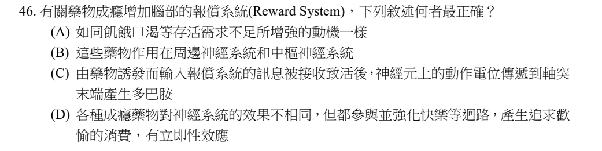
官方採計：D 原答案：C
原C，官方更正為D
主分類：Ch49 Nervous Systems
49.5 / The Brain’s Reward System and Drug Addiction
目錄行3309；條目起始印刷頁1103；實際目錄 PDF48
主分類理由：成癮藥物共同增強多巴胺報償途徑，直接有腦報償系統與藥物成癮的最小條目。
次分類理由：無；未另考神經元膜電位的具體離子機制。
科學說明：原C更正D。不同成癮物質可由不同途徑增強報償系統；動作電位抵達末梢主要促進遞質釋放，不應把釋疑「產生多巴胺」當作當下新合成的精確機制。
來源涵蓋範圍：Campbell正文支援分類原理；原題與官方釋疑的假設、資料及措辭限制另見科學說明。
教材正文：印刷1103／PDF1152、印刷1104／PDF1153
補充來源：不需另加課本外具名機制來源
另行比較：報償系統是否等同所有藥物同一突觸機制？
1103頁支持共同增強多巴胺途徑而藥物種類多樣；更正D成立，將「產生」精確區分為釋放，不宣稱一律抑制回收。
結論：證據確認，分類疑義已解決。完整覆核紀錄
Q47 · 27.3 / Nitrogen Metabolism 正式分類
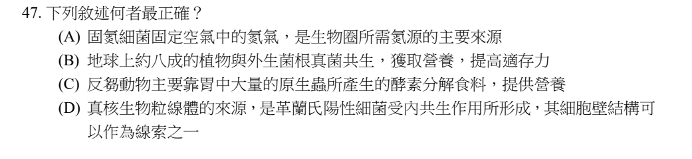
官方採計：A 原答案：A
維持原答案A
主分類：Ch27 Bacteria and Archaea
27.3 / Nitrogen Metabolism
目錄行1738；條目起始印刷頁582；實際目錄 PDF42
次分類：Ch55 Ecosystems and Restoration Ecology
55.4 / Biogeochemical Cycles
目錄行3712；條目起始印刷頁1249；實際目錄 PDF50
主分類理由：原核生物將大氣N₂轉成可同化氮，直接歸氮代謝條目。
次分類理由：固氮在生物圈氮循環的角色需保留生地化循環次條目。
科學說明：官方A並維持。教材582頁明載部分藍綠菌及甲烷古菌能固氮，因此不能把題中「固氮細菌」擴成只有Bacteria、排除Archaea的嚴格域級命題；菌根與反芻共生另為干擾。
來源涵蓋範圍：Campbell正文支援分類原理；原題與官方釋疑的假設、資料及措辭限制另見科學說明。
教材正文：印刷582／PDF631、印刷583／PDF632、印刷1250／PDF1299、印刷1251／PDF1300
補充來源：不需另加課本外具名機制來源
另行比較：固氮者是否只限Bacteria？
582頁明載部分methanogens古菌固氮；官方A的細菌通稱不可當域級排他命題。氮代謝主類與氮循環次類有直接依據。
結論：證據確認，分類疑義已解決。完整覆核紀錄
Q48 · 31.2 / Sexual Reproduction 正式分類
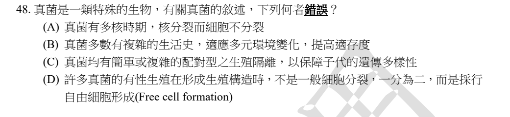
官方採計：C 原答案：C
維持原答案C
主分類：Ch31 Fungi
31.2 / Sexual Reproduction
目錄行1979；條目起始印刷頁658；實際目錄 PDF38、PDF43、PDF45、PDF47
次分類：Ch31 Fungi
31.2 / Asexual Reproduction
目錄行1982；條目起始印刷頁658；實際目錄 PDF43、PDF45、PDF47
主分類理由：真菌配對型、有性核融合與減數分裂直接位於有性生殖条目。
次分類理由：許多真菌亦能無性生殖或無已知有性期，可直接排除全稱。
科學說明：官方C為錯誤敘述並維持。異絲型需相容配對，但不能說所有真菌皆如此；課本也載許多無已知有性階段。多核、雙核及孢子形成階段需分辨，不自造「自由細胞形成」最小目錄。
來源涵蓋範圍：Campbell正文支援分類原理；原題與官方釋疑的假設、資料及措辭限制另見科學說明。
教材正文：印刷657／PDF706、印刷658／PDF707、印刷659／PDF708、印刷663／PDF712、印刷664／PDF713、印刷665／PDF714、印刷666／PDF715
補充來源：不需另加課本外具名機制來源
另行比較：配對型是否所有真菌皆不可缺？
658–659頁有無性與無已知有性期，已可排除全稱C；663–666頁比較核相與孢子過程，不把雙核與任何多核完全等同。
結論：證據確認，分類疑義已解決。完整覆核紀錄
Q49 · 6.6 / Components of the Cytoskeleton 正式分類
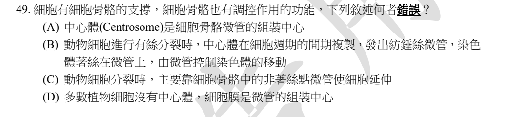
原卷PDF10 · 官方原答案PDF4 · 釋疑PDF14、釋疑PDF15
官方採計：D 原答案：D
維持原答案D
主分類：Ch06 A Tour of the Cell
6.6 / Components of the Cytoskeleton
目錄行381；條目起始印刷頁113；實際目錄 PDF36
次分類：Ch12 The Cell Cycle
12.2 / The Mitotic Spindle: A Closer Look
目錄行773；條目起始印刷頁240；實際目錄 PDF38
主分類理由：辨別微管組裝與動植物中心體差異，直接採細胞骨架組成條目。
次分類理由：動粒與非動粒微管在分裂中的角色由紡錘體條目補足。
科學說明：官方D並維持。多數高等植物無典型含中心粒的中心體；但「只有核膜能組裝、細胞膜不能」過度排他，Arabidopsis原始研究在核膜及細胞膜找到γ-tubulin複合體成員。動粒移動涉及馬達與微管解聚，教材240–241頁也不支持動粒完全無運動機制的概括。
來源涵蓋範圍：Campbell支援所列分類框架；具名機制或科學界線由列示原始研究/官方來源補足。
教材正文：印刷113／PDF162、印刷114／PDF163、印刷115／PDF164、印刷238／PDF287、印刷239／PDF288、印刷240／PDF289、印刷241／PDF290
補充來源：S06
另行比較：植物微管只能在核膜組裝嗎？
本地114與240頁只否定典型中心粒中心體的普遍性；原始GCP2/3定位同時見核膜與細胞膜，排除釋疑絕對排他說法。骨架及紡錘體主次仍可確定。
結論：證據確認，分類疑義已解決。完整覆核紀錄
Q50 · 45.3 / Hormones and Biological Rhythms 正式分類
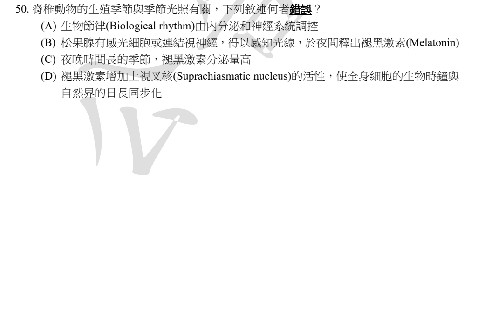
官方採計：D 原答案：D
維持原答案D
主分類：Ch45 Hormones and the Endocrine System
45.3 / Hormones and Biological Rhythms
目錄行3045；條目起始印刷頁1015；實際目錄 PDF47
次分類：Ch49 Nervous Systems
49.2 / Biological Clock Regulation
目錄行3258；條目起始印刷頁1094；實際目錄 PDF48
主分類理由：松果腺褪黑激素與夜長、季節的關聯，直接歸荷爾蒙與生物節律。
次分類理由：SCN作為生物時鐘的調節條目補足神經控制與回饋。
科學說明：官方D並維持。本地12e印刷1015頁只說褪黑激素影響SCN，沒有明寫全面抑制；另以SCN實驗研究支持特定條件下放電抑制。視網膜經SCN及多突觸途徑影響松果腺，不將釋疑「連結視神經」讀成直接連接。
來源涵蓋範圍：Campbell支援所列分類框架；具名機制或科學界線由列示原始研究/官方來源補足。
教材正文：印刷1015／PDF1064、印刷1094／PDF1143、印刷1095／PDF1144
補充來源：S07
另行比較：12e正文是否直接寫褪黑激素全面抑制SCN？
1015頁僅稱影響活性，抑制方向由特定SCN原始實驗補足；1094頁生物鐘框架相符。限定物種與實驗條件，官方D與來源涵蓋範圍分開保留。
結論：證據確認，分類疑義已解決。完整覆核紀錄
目前篩選沒有符合的題目；本年度總數仍為50題。
補充來源
查證日期：2026-09-08。使用原始研究摘要及官方資料，不宣稱所有出版商全文已取得。詳細界線見來源紀錄。
- S01 Bongkrekic acid and ANT inhibition: original cultured-cell experiments (2019)
米酵菌酸抑制ANT之ADP/ATP交換；細胞的氧消耗與ATP影響依實驗條件而異。
原始來源1 - S02 CDC clinician guidance for E. coli / STEC
STEC抗菌藥可能增加HUS風險，適用範圍不能泛化成所有E. coli。
原始來源1 - S03 CDC laboratory testing for MRSA
mecA編碼PBP2a，其對β-lactam親和力較低，支持作用靶點改變。
原始來源1 - S04 American Phytopathological Society: Brown Rot laboratory background
以植物褐腐病接種、再分離示範Koch原則，直接反駁植物病一般不適用的斷言。
原始來源1 - S05 H. pylori urease (1995) and infection-induced DNA breaks (2014)
尿素酶利用尿素產氨；感染細胞的DNA損傷研究不等同證明某毒素直接以DNA為唯一靶點。
原始來源1 · 原始來源2 - S06 Arabidopsis GCP2/GCP3 gamma-tubulin-complex localization (2007)
核膜及細胞膜免疫定位支持植物有分散的微管組裝機制，不能聲稱僅核膜能組裝。
原始來源1 - S07 Melatonin and SCN neuronal inhibition: original experiments (2015, 1995)
特定SCN神經元實驗中褪黑激素引發抑制及相關離子通道作用；不泛化所有物種與所有條件。
原始來源1 · 原始來源2 - S08 Searchinger et al. Biofuel land-use greenhouse-gas model (2008)
土地利用改變可增加生質燃料生命週期排放，反駁一律淨零的外推；證據為模型研究。
原始來源1 - S09 Fraley et al. Expression of bacterial genes in plant cells (1983)
實驗把嵌合基因置入Ti相關載體，再以農桿菌與植物細胞共培養獲得轉殖組織。
原始來源1 - S10 Vazquez et al. Male Drosophila chromosome pairing (2002), FlyBase abstract
雄D. melanogaster減數分裂通常不發生重組，故圖距題須明示一般雌蠅重組假設。
原始來源1